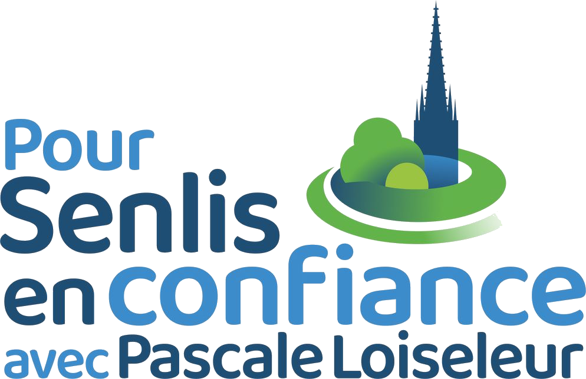
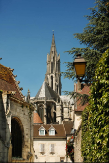
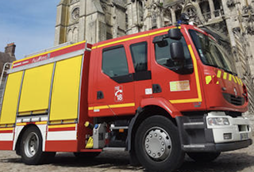
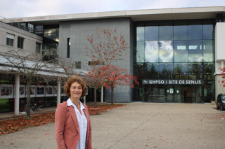
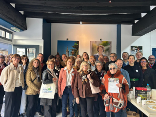

Liste officielle « Pour Senlis en Confiance »

Maire de Senlis depuis 14 ans
Mariée et mère de 5 enfants, titulaire d'une maîtrise de lettres modernes, d'un diplôme de bibliothécaire-documentaliste, d'un diplôme en relations humaines et animation des groupes et plus récemment d'un diplôme de médiateur, Pascale Loiseleur s'appuie sur un parcours construit autour de l'écoute, de la concertation et de la compréhension des dynamiques humaines.
Lieutenant-colonel de la réserve citoyenne de l'Armée de l'air, vice-présidente de l'Union des Maires de l'Oise, membre du Bureau du Parc naturel régional Oise – Pays de France et première vice-présidente de la Communauté de communes Senlis Sud Oise en charge des finances et de la sécurité, elle porte une vision exigeante et structurée de l'action publique.
Originaire de Senlis, où sa famille est implantée depuis près d'un siècle, Pascale Loiseleur a toujours placé la protection de l'identité senlisienne et la valorisation du patrimoine au cœur de son action municipale. Sa politique d'aménagement, fondée sur le refus de la bétonnisation et la défense des équilibres architecturaux et paysagers, s'inscrit dans une vision de long terme attentive au cadre de vie et au caractère unique de Senlis.
Sous sa conduite, Senlis a engagé des transformations majeures : reconversion du quartier Ordener, création de l'EcoQuartier, relance de zones économiques, restauration du grand orgue de la cathédrale, ouverture de la première crèche municipale, développement d'équipements structurants (terrain de football synthétique, Pôle d'Échange Multimodal, conservatoire, extension de l'école maternelle Beauval). L'embellissement de la ville a permis l'obtention des quatre fleurs du label « Villes fleuries ».
La démographie s'est redressée, la sécurité s'est améliorée avec une baisse de la délinquance, et plusieurs labels — Ville d'art et d'histoire, Ville amie des enfants — ont confirmé la qualité des politiques menées. Guidée par le refus du clientélisme, l'équité territoriale et la transparence, Pascale Loiseleur a su rassembler durablement, tant au sein de la municipalité que de la Communauté de Communes Senlis Sud Oise.
Projet pour 2026 : cinq axes pour construire l'avenir de Senlis

Le prochain mandat s'ouvrira avec une ambition forte :
La solidarité et la protection constitueront l'un des fondements majeurs de l'action municipale.
L'équipe municipale porte un projet clair, structuré autour de cinq axes politiques.

La sécurité est la première préoccupation des Senlisiens, et elle sera une des priorités du mandat. La politique municipale reposera sur quatre piliers indissociables : protéger, prévenir, rassurer et faire respecter la loi.
Chaque projet, chaque service et chaque élu devra viser un haut niveau de qualité, digne de l'histoire, des exigences et du patrimoine de Senlis.
La qualité de vie restera un marqueur fort. L'objectif : maintenir une ville exemplaire, accueillante pour toutes les générations, et préparer l'avenir dans un esprit de cohésion.

Préserver le patrimoine, réhabiliter plutôt que détruire, protéger les espaces naturels, accompagner une écologie réaliste, valoriser les monuments, moderniser les équipements et faciliter les déplacements du quotidien définiront une politique assumée de qualité du cadre de vie.

Renforcer le lien entre la municipalité et les habitants : une ville qui écoute, qui explique ses décisions et qui rend des comptes. Nous assumerons une communication de mandat plus claire et plus directe, fidèle à l'esprit de la campagne, et un dialogue permanent avec les Senlisiens à travers des consultations régulières, une participation citoyenne renforcée et des outils numériques interactifs accessibles à tous.
Cinq axes pour construire l'avenir de Senlis
Le prochain mandat s'ouvrira avec une ambition forte : soutenir les enfants, accompagner les familles, valoriser les jeunes, appuyer les actifs et entourer les aînés. La solidarité et la protection constitueront l'un des fondements majeurs de l'action municipale.
L'équipe municipale porte un projet clair, structuré autour de cinq axes politiques.
La sécurité est la première préoccupation des Senlisiens, et elle sera une des priorités du mandat. La politique municipale reposera sur quatre piliers indissociables : protéger, prévenir, rassurer et faire respecter la loi.
Chaque projet, chaque service et chaque élu devra viser un haut niveau de qualité, digne de l'histoire, des exigences et du patrimoine de Senlis.
La qualité de vie restera un marqueur fort. L'objectif : maintenir une ville exemplaire, accueillante pour toutes les générations, et préparer l'avenir dans un esprit de cohésion.
Préserver le patrimoine, réhabiliter plutôt que détruire, protéger les espaces naturels, accompagner une écologie réaliste, valoriser les monuments, moderniser les équipements et faciliter les déplacements du quotidien définiront une politique assumée de qualité du cadre de vie.
Renforcer le lien entre la municipalité et les habitants : une ville qui écoute, qui explique ses décisions et qui rend des comptes. Nous assumerons une communication de mandat plus claire et plus directe, fidèle à l'esprit de la campagne, et un dialogue permanent avec les Senlisiens à travers des consultations régulières, une participation citoyenne renforcée et des outils numériques interactifs accessibles à tous.
Découvrez nos vidéos et interventions
Tracts et documents de campagne
Cliquez sur votre quartier et partagez vos idées pour Senlis
Cliquez sur la carte pour voir les détails et partager vos idées pour ce quartier
Chaque proposition compte : ensemble, construisons l'avenir de Senlis
{kind=link}